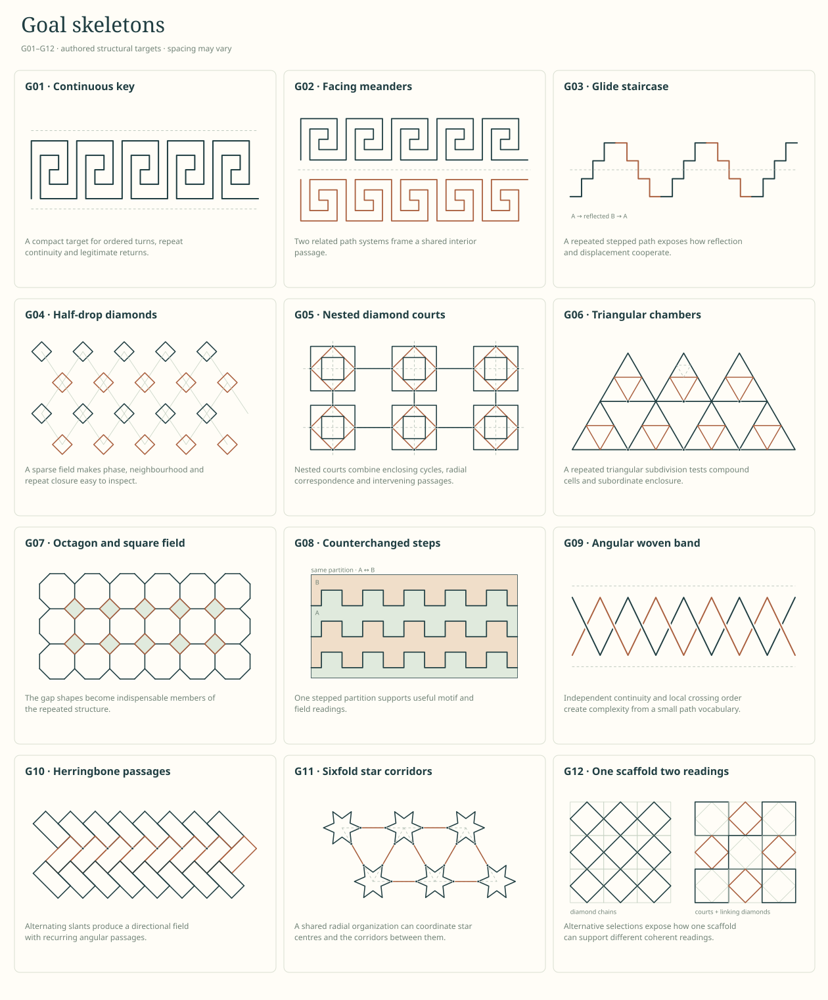

Simple forms, then elaborations
Ten families and thirty labelled diagrams. Compare an ordered span with a fret, a lattice with its selected paths, or an aligned field with a half-drop.
Open the glossaryNamed goals, flexible dimensions
Twelve targets combine the families into courts, keys, passages and shared fields. Each states what matters, what can vary, and how a result can miss.
Browse the goalsGoal contact sheet
Use IDs in conversation: “G05, but wider courts”, “combine S04 with S08”, or “preserve G01 continuity while adding G08 field roles”.

Goal sheet SVG · Glossary sheet SVG · Prepare an experiment brief


Useful plain controls
These can satisfy selected mathematical properties while missing a particular design target. They help expose weak scoring rules; simplicity itself is not a defect.
C01Vacant field
Maximal apparent symmetry; no useful structure to recognize.
C02Isolated bars
A valid repeated arrangement, but no connected cross-cell passage.
C03Repeated overdraw
More darkening at one site; no new coverage or structural variety.